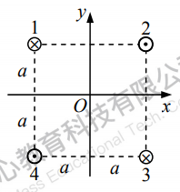

DeoGratias26 mar 2022, 22:53
I fili infiniti 1, 2, 3, 4 sono percorsi da una corrente \(I\) nei versi indicati in figura e sono perpendicolari al piano \(xy\). Le loro intersezioni con esso formano un quadrato di lato \(2a\), centro nell'origine \(O\) e lati paralleli agli assi \(x,y\). Il sistema è posto in un campo magnetico uniforme \(\mathbf{B_0}=B_0 \hat{z}\)
1) Trovare il campo magnetico generato dalle correnti nei fili nel punto \((x,y)\)
L'energia potenziale associata a un atomo posto nella trappola magnetica è direttamente proporzionale al campo magnetico agente su di esso, ovvero \(U=\mu |\mathbf{B_{tot}}|\), dove \(\mu\) è una costante positiva.
2) Qual è l'energia cinetica minima che deve avere un atomo per sfuggire alla trappola, partendo dall'origine? Dove deve essere diretto?

DeoGratias29 mar 2022, 11:46
roncu ha scritto: ↑29 mar 2022, 11:33
Una domanda preliminare: considerando una spira amperiana circolare centrata nell'origine con raggio minore di
\(a\sqrt 2\)il campo B generato dai fili mi verrebbe nullo. E mi pare succederebbe con la stessa spira di raggio maggiore di
\(a\sqrt2\). Ma è possibile? Cosa sbaglio clamorosamente? :?: :?:
Nel tuo caso la circuitazione \(\oint_{\gamma} \mathbf{B} \cdot \textup{d}\mathbf{s}\) è giustamente nulla, ma non puoi concludere che si abbia sempre \(\mathbf{B}=\mathbf{0}\) poiché il valore di \(\mathbf{B} \cdot \textup{d}\mathbf{s}\) varia lungo la curva, sia perché cambia l'angolo tra i due vettori sia perché \(|\mathbf{B}|\) non è costante.
Hint: principio di sovrapposizione dei campi magnetici
DeoGratias3 apr 2022, 10:49
Sì, è corretto :D (e in genere è anche l'unico procedimento applicabile in questi casi)
DeoGratias7 apr 2022, 23:38
roncu ha scritto: ↑6 apr 2022, 11:46
1. Dopo il calcolo bovino con il procedimento che mi hai dato per corretto sarei arrivato alle componenti x ed y del campo
\(\vec B\)cioè
\(B_x= \frac {\mu_0 I 2ax_0}{\pi}. [\frac{-(a-y_0)}{(a+y_0)^2 + (x_0-a)^2} + \frac {(a+y_0)}{(a+y_0)^2 + (a+x_0)^2}]\)
\(B_y= \frac{\mu_0 I .2ay_0}{\pi }. [\frac {(a+x_0)}{(a-y_0)^2+ (a+x_0)^2} -\frac{(x_0-a)} {(a-y_0)^2 + (x_0-a)^2}]\)
e quindi mi risulterebbe nel punto
\(P_0(x_0,y_0)\)come risposta
\(\vec B= (\frac{2\mu I x_0}{\pi}.[\frac{-(a-y_0)}{(a+y_0)^2+(x_0-a)^2}+\frac{(a+y_0)}{(a+y_0)^2+(a+x_0)^2})].\vec i + (\frac{2\mu I y_0}{\pi}.[\frac{(a+x_0)}{(a-y_0)^2+(a+x_0)^2}-\frac{(x_0-a)}{(a-y_0)^2+(x_0-a)^2}]).\vec j\)
Il risultato che hai ottenuto è vicino a quello corretto, ma manca ancora qualcosa (ricordati di considerare tutti i fili); il conto alla fine non è dei peggiori, tutti i termini sono simili a quelli che hai già trovato :)
roncu ha scritto: ↑6 apr 2022, 11:46
Non vedo invece perchè si chiama trappola e questo per ora è il mio grosso limite :roll:Perchè l'energia potenziale è massima nel quadrato e poi tende a quella determinata solo da
\(B_0\)
Penso che nell'origine la sua energia sia
\(K_m+\mu B_0 \)mentre se esce dalla trappola fermandosi appena fuori di essa la sua energia è
\( \mu B_0\) Pertanto
\(K_m\) dovrebbe essere equivalente alla
\(B_x\)lungo l'asse x con
\(y_0=0\) che secondo me è la minima come lo sarebbe anche lungo l'asse y.
L'energia nel quadrato non è costante: il campo dei fili è nullo al centro e all'infinito ma non nel resto dello spazio, quindi inizialmente la forza esercitata sulla particella non può che essere repulsiva; non ho ben chiaro quale valore di \(K_m\) tu abbia trovato, ma ti consiglio di considerare un altro punto in cui calcolare l'energia "finale", invece che all'infinito.
DeoGratias9 apr 2022, 23:24
Nel primo il procedimento mi pare giusto, ma c'è qualche segno sbagliato e non è dimensionalmente corretto.
Per quanto riguarda il secondo, il campo generato dai fili non svanisce fuori dal quadrato, ma continua ad essere determinato dall'equazione trovata al punto 1 (diventando nullo soltanto all'infinito). Inoltre dal tuo ragionamento si otterrebbe che l'atomo riesce a uscire con un'energia cinetica arbitrariamente piccola, ma in tal caso non sarebbe una trappola :D
Pensa al punto da cui deve passare in cui l'energia potenziale è massima e prova a continuare da lì
Pigkappa25 mag 2022, 0:59
Ho scritto a DeoGratias sperando intervenga, intanto comunque prenditi pure la staffetta per il 297
DeoGratias26 mag 2022, 0:08
Finite le EuPhO, ritorna la staffetta :D
roncu ha scritto: ↑10 apr 2022, 11:34
Posto una versione delle componenti del campo in cui ho corretto un errore che avevo fatto (speriamo sia stato l'unico) e in cui mi sembra di aver corretto anche l'errore dimensionale poichè attualmente è una lunghezza al cubo fratto una lunghezza alla quarta.
\(B_x= \frac {2\mu I ax_0}{\pi}. [\frac{y_0-a}{[(a-y_0)^2 + (a-x_0)^2].[(a-y_0)^2 + (a+x_0)^2]}+ \frac{y_0+a}{[(a+y_0)^2+(a-x_0)^2].[(a+y_0)^2+(a+x_0)^2]}]\)
\(B_y= \frac{2\mu I ay_0}{\pi}. [\frac{x_0-a}{[(a+y_0)^2+(a-x_0)^2].[(a-y_0)^2+ (a-x_0)^2]}+\frac{x_0+a}{[(a+x_0)^2+(a-y_0)^2].[(a+x_0)^2+(a+y_0)^2]}]\) Dopo il tuo giudizio o continuerò a correggere questo punto 1. o proseguirò per il 2. :roll: :?: :?:
Il valore che hai trovato è più simile al valore corretto, ma ancora c'è qualche errore (ad esempio, non dovresti poter raccogliere \(x_0\) e \(y_0\) fuori dalle parentesi)è; ti consiglio di provare a scrivere il campo di un solo filo per verificare che sia corretto, e di non fare l'MCD tra i denominatori (che davvero renderebbe i conti impossibili :oops: )
Per fare il punto 2 è necessario prima aver fatto l'1, quindi per il momento sarebbe difficile ottenere qualcosa
DeoGratias28 mag 2022, 16:44
Adesso è quasi perfetto, manca soltanto qualche dettaglio... sei sicuro di tutti i segni? ;)
Questo comunque è il modo più pratico di scrivere il campo (e anche quello riportato nella soluzione), visto che per le operazioni della seconda parte fare il denominatore comune ti farebbe solo perdere tempo
DeoGratias28 mag 2022, 17:59
La soluzione ufficiale riporta:
\(\vec{B}=\frac{\mu_0 I}{2\pi}\left\{\left [ \frac{y-a}{(y-a)^2+(x+a)^2}-\frac{y-a}{(y-a)^2+(x-a)^2}+\frac{y+a}{(y+a)^2+(x-a)^2}-\frac{y+a}{(x+a)^2+(y+a)^2} \right ] \hat{i} + \left [ -\frac{x+a}{(y-a)^2+(x+a)^2}+\frac{x-a}{(y-a)^2+(x-a)^2}-\frac{x-a}{(y+a)^2+(x-a)^2}+\frac{x+a}{(x+a)^2+(y+a)^2} \right ] \hat{j} \right\}\)
Questa formula orribile in realtà non serve a molto, visto che per la seconda parte si semplifica notevolmente grazie ad alcune osservazioni ;)
I conti sembrano poco rassicuranti, ma dovrebbero rivelarsi più semplici del previsto :lol:
DeoGratias29 mag 2022, 13:09
Sì, esatto :D
DeoGratias9 giu 2022, 14:47
Ti sconsiglio di provare a trovare il massimo analiticamente, visto che probabilmente l'equazione che troveresti non sarebbe neanche risolubile immediatamente (non ho provato, quindi potrei sbagliarmi). Ricordati di considerare anche il campo esterno (non solo quello dei fili), prova a fare un claim sulla direzione ottimale e poi a giustificarlo.
DeoGratias27 giu 2022, 15:17
Lascia stare il movimento lungo l'asse z, la soluzione ottimale è quella in cui l'atomo rimane nel piano \(xy\).
Prova a pensarla così: più il potenziale in un punto è alto, meno quel punto è "raggiungibile" (servirebbe una maggiore energia cinetica per raggiungerlo). Il potenziale aumenta avvicinandosi a un filo, quindi il tracciato ottimale dovrebbe mantenersi alla stessa distanza tra i due fili tra cui passa.
DeoGratias30 lug 2022, 20:40
Va bene così, vai avanti col prossimo :D